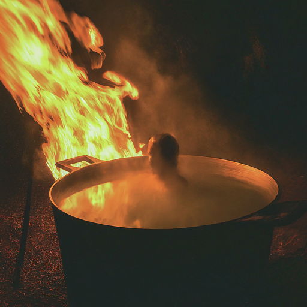

The Alfet was a form of trial by ordeal; the accused would stick their arm, up to the elbow in a cauldron filled with boiling water.
The arm would then be bound for three days and the persons innocence would be determined based of if the wound was healing or infected.
